9th Grade Science & Health Worksheets
70 Science & Health resources for 9th Grade, ready to print: Obesità, Nobelio, Nihonio, Niobio and more. Each resource page shows the grade range, page count and a preview and links straight to the product on TpT.
70 resources

Oil Refinery Reading Comprehension Passages | Chemistry Scavenger Hunt 8-9

Journey Through the Sun Reading Comprehension | Science Scavenger Hunt 8-9

L'espace – French Reading Comprehension BUNDLE | Space & Astronomy Fiches

Lo spazio – Italian Reading Comprehension BUNDLE | Space Schede

Corpo umano e salute – Italian Reading BUNDLE | Human Body Schede

Le corps humain – French Reading BUNDLE | Human Body & Health Fiches
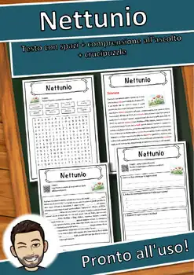
Nettunio – Italian Reading Comprehension Worksheet (Scheda): Cloze & Listening
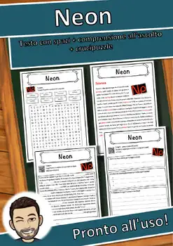
Neon – Italian Reading Comprehension Worksheet (Scheda): Cloze & Listening
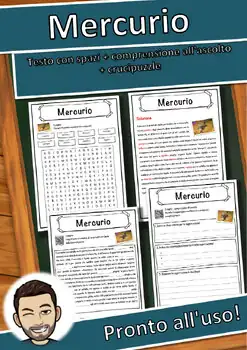
Mercurio – Italian Reading Comprehension Worksheet (Scheda): Cloze & Listening
Lutezio – Italian Reading Comprehension Worksheet (Scheda): Cloze & Listening

Laurenzio – Italian Reading: Cloze Text, Listening Task & Word Search (Scheda)
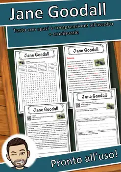
Jane Goodall – Italian Reading: Cloze, Listening & Word Search
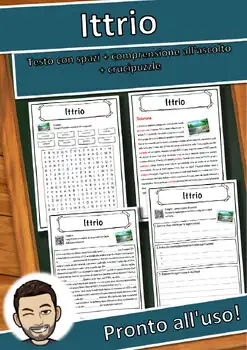
Ittrio – Italian Reading: Cloze Text, Listening Task & Word Search (Scheda)
Influenza spagnola – Italian Reading: Cloze, Listening & Word Search
Infarto miocardico acuto – Italian Reading: Cloze, Listening & Word Search
Illuminismo – Italian Reading: Cloze Text, Listening Task & Word Search (Scheda)
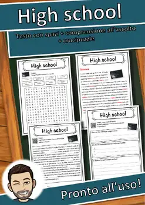
High school – Italian Reading: Cloze Text, Listening Task & Word Search (Scheda)
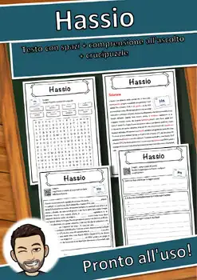
Hassio – Italian Reading: Cloze Text, Listening Task & Word Search (Scheda)

Galileo Galilei – Italian Reading: Cloze, Listening & Word Search
Fridays for Future – Italian Reading: Cloze, Listening & Word Search
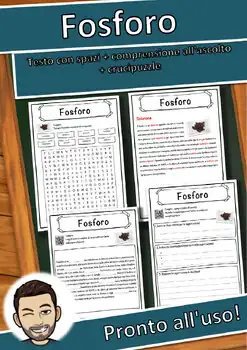
Fosforo – Italian Reading: Cloze Text, Listening Task & Word Search (Scheda)
Flerovio – Italian Reading: Cloze Text, Listening Task & Word Search (Scheda)
Fantascienza – Italian Reading: Cloze, Listening & Word Search
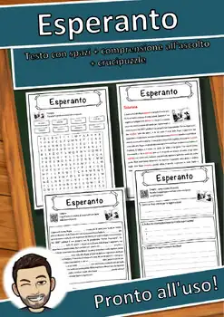
Esperanto – Italian Reading: Cloze Text, Listening Task & Word Search (Scheda)
Copernicio – Italian Reading: Cloze Text, Listening Task & Word Search (Scheda)
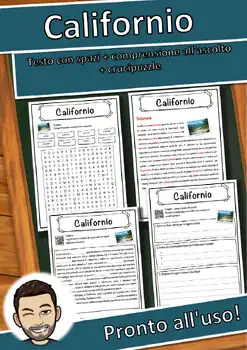
Californio – Italian Reading: Cloze Text, Listening Task & Word Search (Scheda)
Boro – Italian Reading: Cloze Text, Listening Task & Word Search (Scheda)
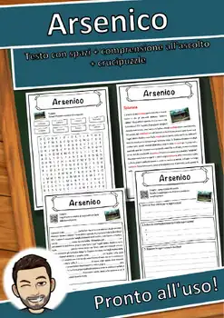
Arsenico – Italian Reading: Cloze Text, Listening Task & Word Search (Scheda)
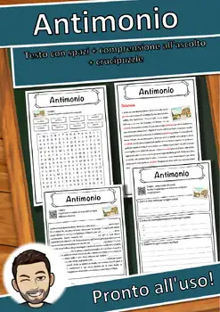
Antimonio – Italian Reading: Cloze Text, Listening Task & Word Search (Scheda)
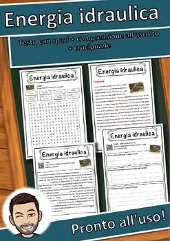
Energia idraulica – Italian Reading: Cloze, Listening & Word Search
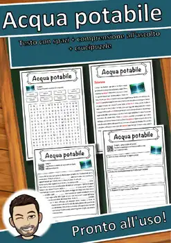
Acqua potabile – Italian Reading: Cloze, Listening & Word Search
Disprosio – Italian Reading: Cloze Text, Listening Task & Word Search (Scheda)
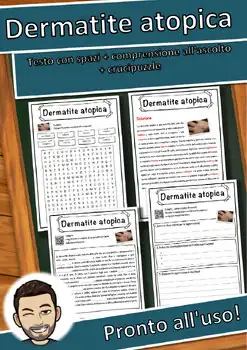
Dermatite atopica – Italian Reading: Cloze, Listening & Word Search
Coscienza morale – Italian Reading: Cloze, Listening & Word Search
Colera – Italian Reading: Cloze Text, Listening Task & Word Search (Scheda)
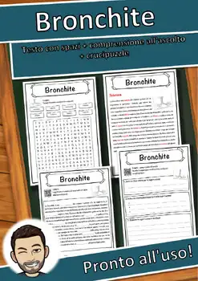
Bronchite – Italian Reading: Cloze Text, Listening Task & Word Search (Scheda)
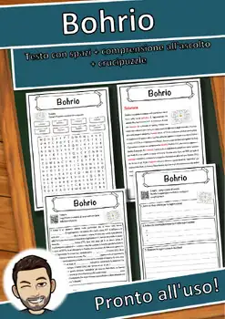
Bohrio – Italian Reading: Cloze Text, Listening Task & Word Search (Scheda)
Batomorphi – Italian Reading: Cloze Text, Listening Task & Word Search (Scheda)
Anno – Italian Reading: Cloze Text, Listening Task & Word Search (Scheda)
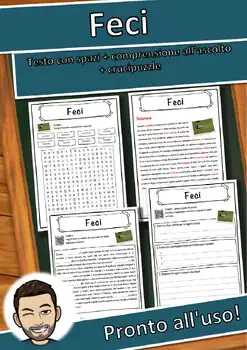
Feci – Italian Reading: Cloze Text, Listening Task & Word Search (Scheda)
Energia solare – Italian Reading: Cloze, Listening & Word Search
Energia rinnovabile – Italian Reading: Cloze, Listening & Word Search
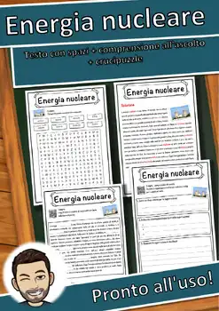
Energia nucleare – Italian Reading: Cloze, Listening & Word Search
Diamante – Italian Reading: Cloze Text, Listening Task & Word Search (Scheda)
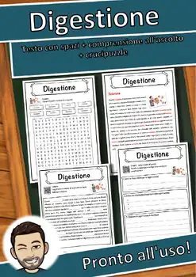
Digestione – Italian Reading: Cloze Text, Listening Task & Word Search (Scheda)
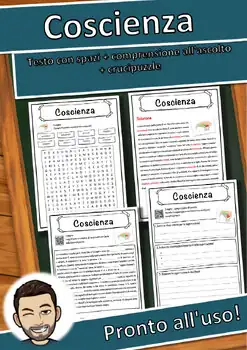
Coscienza – Italian Reading: Cloze Text, Listening Task & Word Search (Scheda)
Clima subtropicale – Italian Reading: Cloze, Listening & Word Search
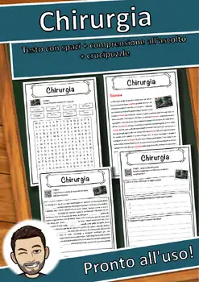
Chirurgia – Italian Reading: Cloze Text, Listening Task & Word Search (Scheda)
No resources found – try a different search term or filter.